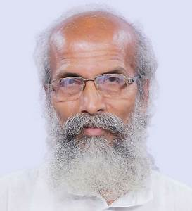

CHIEF GUESTShri Pratap Chandra Sarangi is a Minister of State in the Government of India for Animal Husbandry, Dairying and Fisheries and Micro, Small and Medium Enterprises. He completed his bachelor's degree at Fakir Mohan College, Balasore under Utkal University in 1975. Since his childhood, Sarangi was a spiritual seeker. He wanted to become a monk of the Ramakrishna Math. He made several visits to Belur Math, the headquarters of the Ramakrishna Order in Howrah, West Bengal. He opened schools for the poor called Samar Kara Kendra, under the Gana Shikhsa Mandir Yojana in tribal villages in Balasore and Mayurbhanj District also spending the major portion of his MLA pension to support the education of poor children in his area. He revolutionalised primary education in rural areas through the innovative concept of community funded Ekal Vidyalaya or single teacher schools.
|
 |